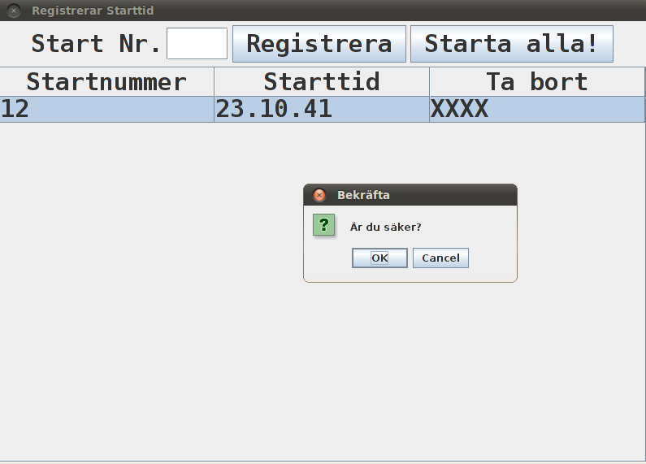

Alla operativsystem: För att installera programmet så extraherar du helt enkelt mappen Enduro i Enduro.zip till den plats du vill köra programmet ifrån. Sen kan du börja använda det på en gång. Användningen av programmet beskrivs i avsnitt 2. Datorn som ska köra systemet förutsätts ha Java >=1.5 och en systemklocka som är korrekt inställd i förhållande till den tidszon som tävlingen körs i. Stöd för tävlingar mellan olika tidszoner finns ej.
Tillbaka
För att starta programmet dubbelklickar du helt enkelt på .jar-Filen som finns i Enduro-mappen. Då körs programmet enligt de parametrar som finns angivna i konfigurationsfilen. Hur du manipulerar konfigurationsfilen beskrivs i avsnitt 2.1. Det är i konfigurationsfilen du väljer vilken typ av
tävling som skall köras. För varje typ av tävling finns ett användargränssnitt, dessa beskrivs i avsnitt 2.2, 2.3 och 2.4.
Observera att om registeringen av starttider och måltider in i filer skall fungera så får ni tricksa ett lite grann genom att registrera dummystarttider och dummysluttider. Då kommer filerna uppdatera sig och därmed laddas in tabellen vid nästa körning (uppdateringen sker lite sporadiskt).
Registering med skitig nummerplåt fungerar inte heller helt adekvat. Att editera ett blankt startnummer i tabellen orsakar inte att det nya startnumret sparas i start/sluttidsfilerna. Detta kan dock göras manuellt vid behov.
I konfigurationsfilen kan du också välja att starta sorteringsprogrammet för respektive tävlingstyp.
Sorteringsprogrammet tar varje enskild resultatfil som skapats av funktionärer på olika stationer, sätter ihop dem och sorterar slutresultatet. Sorteringsprogrammet används genom konfigurationsfil, detta beskrivs närmare i avsnitt 2.5.
Tillbaka
Finns inte än!
Tillbaka
Fig 2.2.1 - Huvudvy för maratonlopp
Om du startar programmet i läget Maratonlopp visas ett fönster med knapparna "Deltagare","Starttid","Sluttid" och "Generera Resultat" visas. Se bild ovan. Du har möjlighet att starta 4 olika delprogram genom att klicka på motsvarande knapp. De olika delprogrammen beskrivs nedan.Tillbaka
- Deltagare - I detta delprogram kan du registera alla deltagare som skall vara med i tävlingen, beskrivs i avsnitt 2.1.
- Starttid - I detta delprogram kan du registera starttider för olika deltagare och även sätta upp en masstart, beskrivs i avsnitt 2.2.
- Sluttid - I detta delprogram kan du registera sluttider för olika deltagare, beskrivs i avsnitt 2.3.
- Generera resultat - I detta delprogram kan du generera en resultatfil från en starttidsfil och en sluttidsfil, beskrivs i avsnitt 2.4.
2.2.1. Läs in deltagare från person-fil
Finns inte än!
Tillbaka2.2.2. Registrera starttid
Fig 2.2.2.1 - Initialt startfönster
I detta fönster har du möjlighet att registrera starttider för olika startnummer. Det fungerar på följande vis.Du får nu följande vy:
- Klicka i "Start Nr." fältet
- Skriv in startnumret, om det inte finns tillgängligt för tillfället kan du till exempel lämna det blankt.
- Klicka på "Registrera" knappen
Fig 2.2.2.2 - En tid registrerad
Om du så behagar kan du nu ta bort en registrerad tid genom följande enkla kommandon.
- Dubbelklicka på "XXXX" på den rad du vill ta bort.
- Välj det alternativ som reflekterar din preferens.
Fig 2.2.2.3 - Borttagning av registerad tid
2.2.3. Registrera sluttid
Att registera en sluttid är helt analogt med att registera en starttid, det enda som skiljer sig är namnen på kolumnerna i tabellen och att masstart saknas.
Tillbaka2.2.4. Generera resultatfil
För att generera en resultatfil så klickar du helt enkelt på knappen "Generera resultat" enligt fig 2.2.1. Du kommer då få en fil "resultat.txt" i din Enduro-mapp. Denna kan senare användas i sorteringsprogrammet.
Tillbaka
För varvloppstävlingar är registreringsproceduren identisk med den för maratonlopp med skillnaden att den första tiden - starttiden - registreras via knappen Starttid (se fig 2.2.1). Alla påföljande tidsregistreringar sker via knappen Måltid (se fig 2.2.1).
Tillbaka
OBS! Fullt stöd i GUI finns ej. I gui't finns stöd för att generera en resultatfil utifrån start och måltider. Det går dock inte att registera förare för en viss etapp.
Tillbaka